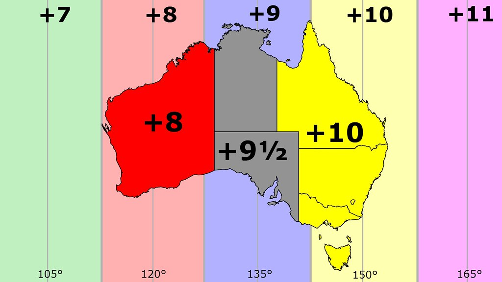
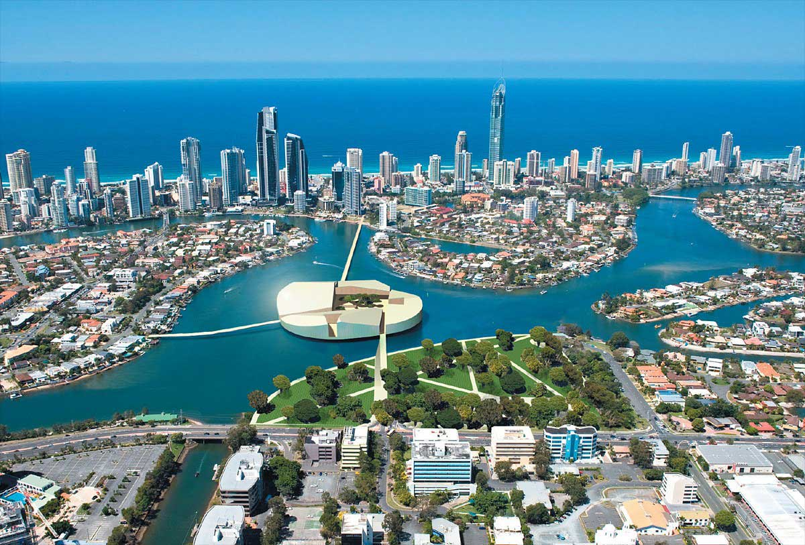

Австралия
Краткая информация
-
Место: 6 (ТОП-10)
-
Площадь: 7 692 024 км²
-
Население: 27 879 285 чел. (2022 г.)
-
Столица: Канберра (с 1927 г.)
-
Язык: Английский
-
Валюта: Австралийский доллар, $ (AUD)
-
Крупнейшие города: Сидней, Мельбурн, Брисбен, Перт, Аделаида, Голд-Кост, Ньюкасл, Вуллонгонг
Георафическое положение и границы
-

Австралия
-

Австралия на карте
Австралийский Союз — государство в Южном полушарии площадью 7 692 024 км². Австралия является шестым по площади государством в мире после России, Канады, Китая, США и Бразилии, занимая около 5 % поверхности суши Земли. Также является крупнейшим по территории государством, полностью расположенном в Южном полушарии.
В него входят: материк Австралия (включая остров Тасмания) площадью 7 659 861 км² и другие прибрежные острова площадью 32 163 км².
-
Австралия
-
Остров Тасмания
Под контролем Австралии находятся несколько внешних территорий: Кокосовые (Килинг) острова площадью 14 км², остров Рождества площадью 135 км², острова Ашмор и Картье площадью 199 км², территория островов Кораллового моря площадью 7 км² (площадь акватории около 780 тыс. км²), остров Херд и острова Макдональд площадью 372 км² (входят в состав Австралийской антарктической территории), остров Норфолк площадью 35 км²и Австралийская антарктическая территория площадью 5 896 000 км² (суверенитет Австралии над этой территорией не признаётся большинством стран мира). Общая площадь всех внешних территории 5 896 762 км² (без Антарктической территории — 762 км²).
Северное и восточное побережья Австралии омывают моря Тихого океана: Арафурское, Коралловое, Тасманово, Индийского океана — Тиморское; западное и южное — Индийский океан. Близ Австралии расположены крупные острова Новая Гвинея и Тасмания. Вдоль северо-восточного побережья Австралии более чем на 2000 километров тянется самый большой в мире коралловый риф — Большой Барьерный риф.
Часовые пояса Австралии
В Австралии существует три часовых пояса: восточное стандартное время (EST) для восточных штатов, центральное стандартное время (CST) для северной части и западное центральное время (WST) для Западной Австралии. Центральное стандартное время на час отстает от восточного, а западное – на два.
Переход на летнее время
В этот период практически во всех австралийских штатах время переводится на час вперед. В Новом Южном Уэльсе, на австралийской столичной территории, в Виктории, Тасмании и Южной Австралии часы переводят в начале октября до начала апреля. На Северной территории, в Квинсленде и Западной Австралии часы не переводят вообще.
Штат/Территория — Стандартный часовой пояс — Летнее время
- Западная Австралия — UTC/GMT+8 — Нет
- Южная Австралия — UTC/GMT+9.5 — UTC/GMT+10.5
- Северная территория — UTC/GMT +9.5 — Нет
- Квинсленд — UTC/GMT+10 — Нет
- Новый Южный Уэльс — UTC/GMT+10 — UTC/GMT+11
- Австралийская столичная территория — UTC/GMT+10 — UTC/GMT+11
- Виктория — UTC/GMT+10 — UTC/GMT+11
- Тасмания — UTC/GMT+10 — UTC/GMT+11
-

Часовые пояса Австралии
-
Часовые пояса Австралии
Климат
Пояса: Экваториальный, тропический, субтропический, пустынный, полупустынный, умеренный
Климат Австралии находится под значительным воздействием океанических течений, в том числе диполя Индийского океана и Эль-Ниньо, которые создают периодические засухи и сезонное тропическое низкое давление, которое приводит к формированию циклонов в северной части Австралии. Эти факторы вызывают заметное изменение количества осадков от года к году.
-

Климатические пояса
-
Климатические пояса
Большая часть севера страны обладает тропическим климатом с преимущественно летними осадками. Почти три четверти Австралии представляют собой пустыни и полупустыни. В юго-западной части страны климат является средиземноморским. В большей части юго-востока страны (включая Тасманию) климат умеренный. На засушливость региона влияет холодное Западно-Австралийское течение, которое не даёт энергии для образования циклона. Нечто подобное происходит и на западе Южной Америки, но там всё меняется с появлением Эль-Ниньо.
Уровень осадков
Почти 40 % территории Австралии получают менее 250 мм осадков в год, и 70 % — менее 500 мм. Самый засушливый район Австралии расположен вокруг озера Эйр, в Южной Австралии. Ежегодно там выпадает менее 125 мм осадков в год. Для сравнения - в Москве выпадает 600—800 мм осадков в год, в Мадриде - 400 мм, а в Токио - 1530 мм. Регионы, получающие много осадков, невелики по площади. Снег регулярно выпадает только в двух местах — на высоте 1350 м в Австралийских Альпах и на высоте 1050 м в горах Тасмании.
Природа Австралии
На территории Австралии распространены природные зоны влажных и переменно-влажных лесов, смешанных лесов, жестколистных вечнозелёных лесов и кустарников, саванн и редколесий, пустынь и полупустынь.
Реки Австралии
Многие реки являются многоводными, они редко наполняются, в основном, после дождя и часто пересыхают. Однако здесь протекают и крупные реки, все они сосредоточены на юго-востоке, так как именно здесь выпадает самое большое количество осадков по сравнению с остальной частью материка.
Множество рек на других континентах впадают в моря или океаны. В Австралии все иначе. Реки Австралии не только не впадают в океан, а в большинстве случаев пересыхают.
- Река Муррей
-

река Муррей
-

река Муррей
- Река Маррамбиджи
-

река Маррамбиджи
- Лаклан
-
Река Лаклан
- Купер-Крик
-

река Купер-Крик
Река Муррей – самая длинная в Австралии (2508 км.). Муррей вместе со своим притоком Дарлингом (1472 км.) составляют главную речную систему страны. Она берет свое начало на Большом Водораздельном хребте и является одной из немногих рек, которая никогда не пересыхает.
Река Маррамбиджи – самый большой приток Муррея. Она протекает через такие крупные города Австралии, как Канберра, Ясс, Уогга-Уогга и т.д. В период дождей река становится судоходной, но не полностью, а только в пределах 500 км. от реки Муррей до города Уогга-Уогга.
Лаклан – река протяженностью 1339 км, находящаяся в центральной части Нового Южного Уэльса. Она является правым притоком Маррамбиджи. Впервые реку исследовал в 1815 году Дж. У. Эванс, который назвал ее в честь губернатора штата.
Купер-Крик – река протяженностью 1113 км., протекающая в штатах Квинсленд и Южной Австралии. Это пересыхающая река, которая во время обильных дождей разливается и затопляет ближайшие равнины. Однако, из-за жаркого климата быстро пересыхает, иногда полностью.
Также достаточно крупными по австралийским меркам считаются такие реки, как Флиндерс (1004 км.), Дайамантина (941 км.), Брисбен (344 км.).
Озера Австралии
Озер в Австралии крайне мало и все они соленые. Даже самые крупные из них в период засух пересыхают или распадаются на множество мелких водоемов.
Эйр – самое большое озеро Австралии. Названо в честь его первооткрывателя, английского исследователя Эдуарда Джона Эйра. Размеры и очертания этого бессточного соленого водоема непостоянны и зависят от количества выпадающих осадков. Летом, во время дождей, оно наполняется водой, достигая площади 15000 кв.м. и глубины до 20 м.
-

озеро Эйр
Берли-Гриффин – искусственное озеро в центре столицы Австралии Канберры. Его площадь 6,64 кв.км.
-
озеро Берли-Гриффин
Александрина – озеро, прилегающее к побережью Большого Австралийского залива. Неподалеку от него расположено крупнейшее пресноводное озеро материка – Бонни, а также Гэрднер – бессточное озеро, которое считается четвертым по величине соленым озером в Австралии.
В Южной Австралии находится соленое озеро Дисаппойнтмент, а в Западной Австралии – озера Маккай и Амадиус. В засушливые месяцы они пересыхают.
Озеро Хиллер – считается самым необычным озером в Австралии из-за своего розового цвета, который придает ему розовая глина, содержащаяся в нем в большом количестве.
-
озеро Хиллер
Список 10 лучших водопадов Австралии
- Водопад Лесмурди, Перт Хиллс
- Водопад Фортескью, Кариджини
- Водопад Лейн Пул, Нортклифф
- Горизонтальный водопад, к северо-западу от Брума
- Водопад Куиннинуп, Вилиабруп
- Водопад Биделуп, Биделуп
- Водопад Фернхук, Уолпол
- Водопад Жоффр, Кариджини
- Водопад Кинг-Джордж
- Водопад Митчелл, Кунунурра
Горы Австралии
Австралия – самых «низкий» материк планеты. Его средняя высота над уровнем Мирового океана составляет всего 350 м, а также на территории Зеленого континента нет ни одной вершины выше 2500 м. Однако всё же любители альпинизма смогут найти себе здесь занятие. Какие же горы Австралии являются самыми высокими?
- Бимбери
- Фетертоп
- Богонг
- Перишер
- Джагунгал
-
Джагунгал
- Гунгартан
- Тейт
- Твинэм
- Таунсенд
- Косцюшко
-

Косцюшко
Бимбери расположена в непосредственной близости от столицы Австралии, города Канберра. Её высота оценивается в 1912 м. Гора находится на территории основанного в 1984 г. национального парка «Намаджи». За счет воды, собираемой на его территории, обеспечивается потребность в водных ресурсах австралийской столицы. Восхождение на вершину займет всего 3-3,5 часа, при этом никаких альпинистских навыков от туристов, покоряющих пик, не потребуется. Достаточно просто идти по пешеходным тропинкам.
Это вершина находится на территории штата Виктория и имеет высоту, равную 1922 м. Ее особенностью можно считать относительно крутой склон, в то время как большинство других гор, относящихся к системе Австралийских Альп, имеют пологую вершину. Сегодня эта гора входит в состав национального парка Алпайн.
Фетертоп был открыт в 1851 г. скотоводами Джимом Брауном и Джеком Уэллсом. Первым же, кто смог покорить ее, стал Фердинанд фон Мюллер. Несмотря на относительно низкую высоту горы, здесь периодически происходят несчастные случаи с альпинистами. Первый такой случай произошел 2 сентября 1932 года с лыжницей Молли Хилл. В память о ней на горе установлена мемориальная табличка. 31 августа 2009 года здесь пропал один из министров Австралии Тим Холдинг, но через несколько дней его удалось найти и спасти.
Располагается в непосредственной близости от Фетертопа и имеет высоту в 1986 м. Самая высокая точка штата Виктория. Впервые ее смог покорить Фердинанд Мюллер в 1854 г. Гора отделена от других вершин горного массива рекой Биг. На склонах Богонга вплоть до высоты 1800 метров произрастают эвкалипты.
Высота этой горы достигает 2058 м. Здесь располагается знаменитый горнолыжный курорт Perisher Blue, который считается крупнейшим во всем Южном полушарии. Есть свидетельства, что австралийские аборигены проживали на склонах Перишера ещё 20 тысяч лет назад. После колонизации континента европейцы стали использовать местность для сельскохозяйственной деятельности.
Первые горнолыжные курорты на склонах Перишера стали появляться в 1949 году. В 1995 году они все объединились в единый центр горнолыжного спорта, в котором одних только подъемников насчитывается 47 штук.
Расстояние от подножья этой горы до вершины составляет 2061 м. Она находится в национальном парке Австралии «Косцюшко». Этот географический объект очень популярен у альпинистов всего мира. Их внимание привлекает маленькая хижина, возведенная в 1939 году. До нее очень сложно добраться, только профессиональным лыжникам удается посетить это место. Также на склонах Джагунгала расположено несколько примечательных горнолыжных курортов.
Значительная часть территории около горы представляет собой ровные равнины, по которым в зимние месяцы путешествуют любители спокойного лыжного отдыха.
Гунгартат возвышается над окружающим пространством на 2068 м. Как и большинство других высочайших вершин Австралии, он располагается в парке «Косцюшко». Туристы предпочитают посещать эту вершину не зимой, а в летние месяцы, ведь именно тогда с ее высоты открывается вид на чудесную австралийскую природу. Горнолыжники же обычно выбирают для катания более интересные склоны.
Рядом с этой горой проложено немало маршрутов для пеших путешествий. Многие пожилые австралийцы занимаются здесь скандинавской ходьбой.
Трейт находится рядом с небольшой деревушкой Требдо на юге Австралии. Высота горы оценивается в 2068 м. Рядом с ним располагается маленькое озеро с чистейшей водой, которая, по мнению местных аборигенов, обладает целебными свойствами. Ещё один примечательный объект в округе – электростанция Гютег.
Эта гора возвышается над окружающим пространством на 2196 м. Находится она в горной системе, известной как Австралийские Альпы. Несмотря на свою высоту, вершину обходят стороной любители альпинизма. Дело в том, что она слишком простая для них. Также здесь нет достаточно развитой туристической инфраструктуры, даже телефон почти не ловит сигнал. Поэтому перед посещением Твинэма желательно предупредить знакомых о месте, в которое вы отправляетесь.
Высота этой вершины достигает 2209 м. Она находится в провинции Южный Уэльс, на юго-востоке Австралии. У путешественников есть интересная традиция. Каждый, кто пытается покорить Таунсенд, должен взять у ее подножия камень и отнести его на вершину. Тем самым альпинисты помогают горе подрасти и попытаться догнать высочайшую австралийскую вершину, которая находится в непосредственной близости от Таунсенда.
Высочайшая гора австралийского континента возвышается на 2228 м относительно уровня моря. Расположена она в районе Австралийских Альп, в непосредственной близости от другой горы из нашего списка, Таунсенд. Открыл эту вершину в 1840 г. поляк Павел Эдмунд Стшелецкий, который и присвоил ей имя своего знаменитого соотечественника Тадеуша Костюшко.
Интересно, что изначально Стшелецкий, желавший дать имя польского генералиссимуса высочайшей вершине континента, ошибся и присвоил название «Косцюшко» только второй по высоте горе в Австралии. Дальнейшие измерения показали, что Таунсенд на 20 метров выше Косцюшко. Осознав это, власти колонии Новый Южный Уэльс решили поменять местами имена этих двух вершин, чтобы желание Стшелецкого было исполнено.
В 1967 году рядом с горой был основан национальный парк «Косцюшко» площадью 6900 кв. км. Здесь обитают такие редкие биологические виды, как горный кускус и яркая ложная жаба, а для австралийских любителей экстрима открыты горнолыжные курорты. Каждый год парк посещает примерно 3 млн человек.
Есть ли в Австралии вулканы?
В Австралии действующих вулканов нет: континент «покоится» на прочной плите, поэтому никакой геологической активности в Австралии нет уже около полутора миллионов лет – в отличие от Полинезии, ближайшей соседки Австралии, где находятся самые высокие в мире вулканы Мауна-Лоа и Мауна-Кеа.
Австралии действующие вулканы «соседей» доставляют достаточно мало проблем – до самого материка доходят только отголоски. Единственное, на чем может сказаться тектоническая активность вулканов по соседству с материком – так это на добыче газа из прибрежного шельфа.
Если рассматривать Австралию не как континент, а как государство, то следует помнить, что оно включает в себя острова Полинезии и Океании. Поэтому на вопрос «Есть ли в Австралии вулканы», ответ будет положительным. А вот перечень потухших вулканов Австралии достаточно обширен; в него входят 18 вулканов, таких, как Атертон (на его склонах сегодня расположен город Атертон, этот вулкан извергался сравнительно недавно – всего каких-то 100 тысяч лет назад), Баррин и Ичем (в их кратерах теперь располагаются одноименные озера), Хиллсборо, Бундаберг и другие.
Моусон
В 4000 км от Австралии находится вулканический остров Херд, на котором находится базальтовый стратовулкан Моусон (у него есть и другое название – «Биг Бен»). Моусон – вулкан активный: его извержения были зарегистрированы в 1881, 1910, 1950-1954, 1984-1985, 1993, 2000 годах. Последнее на сегодняшний момент извержение происходило с мая 2006 по ноябрь 2007 года.
-
Вулкан Моусон
Назван Моусон в честь австралийского геолога, исследователя Антарктики Дугласа Моусона. Этот вулкан поднимается над уровнем моря на высоту 2745 м (является самой высокой точкой государства Австралия). Узкий перешеек соединяет Моусон с соседним вулканом Диксон.
Подземная цепь вулканов на континенте Австралия
В 2015 году издание Cnet опубликовало результаты, полученные исследовательской группой под руководством Роди Девиса: в Австралии была обнаружена самая длинная в мире континентальная цепь вулканов, скрытая в глубине земной коры. Длина цепи – 2 тысячи километров, это почти в 2 раза больше, чем протяженность йелоустоунской подземной цепи.
Цепочка вулканов, получившая поэтическое название «След костров», пересекает восточную часть материка практически полностью. Образовалась она в результате прохождения материка (во время его сдвига) над активной вулканической точкой в земной мантии. Длина – не единственная интересная особенность «Следа костров»: она еще и располагается достаточно далеко от тектонический плиты, на которой покоится австралийский континент, поэтому цепочка привлекает повышенное внимание ученых: они считают, что ее изучение может пролить свет на процессы движения материков.
Вулканические острова Австралии
В 770 км от Сиднея располагается вулканический остров Лорд-Хау, являющийся древнейшим вулканическим островом Тихого океана; он образовался в результате объединения двух вулканических островов. В 20 км от него находится еще один вулканический остров, Болс-Пирамид (оба острова были открыты одновременно, в 1788 г.). Болс-Пирамид – самый высокий из всех вулканических утесов, высота его пика – 562 м над уровнем моря. Сегодня остров является частью морского парка Лорд-Хау.
Флора и фауна
Ровный тёплый климат, разнообразие природных условий в разных частях континента и длительная изолированность материка способствовали тому, что эволюционные процессы Австралии протекали не так бурно, как на других континентах. Благодаря этому до настоящего времени сохранились удивительные растения и животные, давно вымершие на других континентах.
Из 12 тысяч видов растительности более 9 тысяч — эндемики, не встречающиеся больше нигде в мире. Из-за того, что климат континента большей частью засушливый, растения здесь сухолюбивые, среди них самые известные — эвкалипт и бутылочное дерево. Тропические леса севера богаты зонтичными акациями, огромными эвкалиптами (до ста метров в высоту!), бамбуком, разными видами фикусов и пальм. Восточные субтропические вечнозелёные леса поражают огромными двадцатиметровыми папоротниками и древовидным хвощом.
-
Эвкалипт
-

Бутылочное дерево
На просторах Австралии живут уникальные животные, они не только не существуют больше нигде на планете, они просто не выживут в другом месте, так как питаются растениями, произрастающими только здесь. Почти 90% представителей животного мира континента эндемичны. Из 235 видов млекопитающих половина — сумчатые. На материке до наших дней сохранились «живые ископаемые» — утконос и ехидна. Австралия – единственный континент, где нет ни копытных, ни обезьян. Здесь есть два выживших представителя хищников — тасманский дьявол, плотоядное сумчатое животное, и собака динго. Один из символов Австралии, тасманский дьявол, раньше жил на всей территории материка, но человек и динго вытеснили его на Тасманию.
-

Тасманский дьявол
-
Ехидна
-
Собака динго
Чрезвычайно богат мир пернатых Австралии, насчитывающий 720 видов птиц, из них почти половина — эндемики. Страусы эму, какаду, казуары, чёрные лебеди, птицы-медососы, райские птицы, лирохвосты, — признанные символы континента.
-
Какаду
-
Казуары
Здесь нет хищников, но есть немало других опасных представителей животного мира — в Австралии 65 видов ядовитых змей. Если вы увидите табличку, запрещающую купание, не пренебрегайте предупреждением — в прибрежных водах встречаются смертельно опасные медузы и акулы. К самым ядовитым животным планеты относятся синекольчатые осьминоги.
-
Синекольчатые осьминог
Появление человека не лучшим образом повлияло на флору и фауну, многие их уникальные представители были безвозвратно уничтожены. Создано много природоохранных парков и заповедников. Удалось восстановить некоторые виды животных и растений, бывших на грани исчезновения. Национальные парки дали толчок развитию туризма. Во многих природоохранных зонах созданы интереснейшие туристические маршруты, позволяющие прикоснуться к прошлому планеты и воочию наблюдать за жизнью дикой природы Австралии.
Природные ресурсы
Водные ресурсы
Австралия является самым сухим населенным континентом Земли, характеризующийся одним из самых высоких в мире уровней потребления воды. Водные ресурсы в основном представлены поверхностными водами в виде рек, озер, водохранилищ, плотин и резервуаров для дождевой воды, а также подземными водоносными горизонтами. Как островной континент, Австралия полностью зависит от осадков (дождя и снега) для ее водоснабжения. Искусственные водохранилища имеют решающее значение для поддержания водоснабжения на материке.
Среди стран ОЭСР (Организация экономического сотрудничества и развития), Австралия занимает четвертое место по водопотреблению на душу населения. Общий объем годового стока воды составляет около 243 млрд м³, а общий объем пополнения подземных вод – 49 млрд м³, что дает общий приток водных ресурсов в 292 млрд м³. Только 6% стока воды Австралии находится в бассейне Муррей-Дарлинг, где использование воды составляет 50%. Общая емкость крупных дамб Австралии составляет около 84 млрд м³.
В Австралии распространено использование регенерированной воды (это очищенные сточные воды, не пригодные для питья и предназначены для повторного технического применения) для орошения зеленых насаждений, полей для гольфа, сельскохозяйственных культур или промышленного использования.
Лесные ресурсы
Лесные ресурсы Австралии разнообразны и являются одними из важнейших природных ресурсов континента.
-
Лесные ресурсы
В Австралии есть много лесов, несмотря на то, что она считается одним из самых сухих континентов. На материке находится около 149,3 млн га естественных лесов, что составляет около 19,3% от площади суши Австралии. Большинство деревьев Австралии – это лиственные породы, обычно эвкалипты. Из них, 3,4% (5,07 млн га) классифицируются как первичный лес, наиболее биологически разнообразный и насыщенный углеродом.
Естественные леса Австралии встречаются в большом диапазоне географических ландшафтов и климатических условий, и содержат широкий спектр преимущественно эндемичных видов (т.е. видов, которые больше нигде не встречаются), образующих уникальные и сложные экосистемы. Леса представляют ряд древесной и недревесной продукции, которую австралийцы используют в повседневной жизни. Они также обеспечивают чистоту воды, защищают почвы, предоставляют возможности для отдыха, туризма, а также научной и образовательной деятельности, поддерживают культурные, исторические, и эстетические ценности.
Лесная промышленность континента выиграла от развития плантаций деревьев, которые дают в 14 раз больше древесины на гектар земли, чем естественные леса. В настоящее время, плантации обеспечивают более двух третей древесины Австралии. На этих территориях доминируют быстрорастущие виды деревьев, такие как эвкалипт и сосна лучистая. Основными видами лесной продукции являются пиломатериалы, древесные плиты, бумага и древесная щепа.
Минеральные ресурсы
Австралия входит в число крупнейших в мире производителей полезных ископаемых. Наиболее важными минеральными ресурсами континента являются бокситы, золото и железная руда. Другие полезные ископаемые материка включают медь, свинец, цинк, алмазы и минеральные пески. Большинство минеральных ресурсов добывается в Западной Австралии и Квинсленде. Многие минералы, добытые в Австралии, экспортируются за границу.
-

Минеральные ресурсы
Австралия располагает обширными месторождениями угля. В основном, он встречается в восточной части страны. 2/3 австралийского угля экспортируются главным образом в Японию, Корею, Тайвань и Западную Европу. Остальная часть угля, добытого в Австралии, сжигается для производства электроэнергии.
Природный газ также распространен в стране. Его запасы в основном находятся в Западной и Центральной Австралии. Поскольку большинство этих залежей удалены от городских центров, газопроводы были построены для транспортировки природного газа в такие города, как Сидней и Мельбурн. Часть природного газа экспортируется. Например, природный газ, добытый в Западной Австралии, экспортируется непосредственно в Японию, в жидкой форме.
Австралия также содержит треть мировых запасов урана. Уран используется для производства ядерной энергии. Однако ядерная энергетика и добыча урана являются весьма противоречивыми, поскольку люди обеспокоены пагубным воздействием на окружающую среду из-за его радиоактивных свойств.
Земельные ресурсы
Землепользование оказывает существенное влияние на природные ресурсы Австралии посредством воздействия на воду, почву, питательные вещества, растения и животных. Существует также прочная связь между меняющимися структурами землепользования и экономическими, и социальными условиями, особенно в региональной Австралии. Информация о землепользовании показывает, как используются земельные ресурсы, включая производство продукции (такой, как сельскохозяйственные культуры, древесина и т.д.) и мероприятия по охране земель, защите биоразнообразия, и природных ресурсов.
Общая площадь земель сельскохозяйственного назначения составляет 53,4%, из них: пахотные земли – 6,2%, постоянные культуры – 0,1%, постоянные пастбища – 47,1%.
Около 7% земельных ресурсов Австралии отведены под охрану природы. Другие охраняемые территории, включая аборигенные земли, охватывают более 13% страны.
Лесное хозяйство имеет тенденцию ограничиваться регионами Австралии с более высоким уровнем осадков и занимает почти 19,3% континента. Земли населенных пунктов (в основном городские) занимают около 0,2% от площади страны. Другие виды землепользования составляют 7,1%.
Биологические ресурсы
- Животноводство
-
Животноводство
- Растениеводство
-
Растениеводство
Животноводство является одной из ведущих отраслей сельского хозяйства Австралии. По поголовью овец, страна занимает первое место в мире, а в некоторые годы дает более 1/4 мирового производства шерсти. На территории страны, также разводиться крупный рогатый скот, а побочная продукция включает мясо, молоко, масло, сыр и т.д. экспортируется в другие страны и приносит общий доход более 700 млн американских долларов в год, при этом самым крупным потребителем мяса выступает Индонезия.
Австралия – один из самых больших в мире производителей и экспортеров зерновых культур. Важнейшей выращиваемой культурой является пшеница, посевная площадь которой превышает 11 млн га. Другие австралийские культуры включают ячмень, кукурузу, сорго, тритикале, арахис, подсолнечник, сафлор, рапс, канола, соя и др. На территории страны также выращивают сахарный тростник, бананы, ананасы (преимущественно штат Квиинсленд), цитрусовые (штаты Южная Австралия, Виктория, Новый Южный Уэльс) и др.
Отдых в Австралии
Виды туризма в Австралии
Пляжный отдых. Основное место для любителей этого вида отдыха — Голд Кост (Золотое побережье), район между Сиднеем и Брисбеном. Песчаные пляжи тянутся вдоль побережья на 40 километров. Здесь всё располагает к активному отдыху и развлечениям: поля для гольфа, парки аттракционов, сафари, ночные клубы и дискотеки.
-

Золотое побережье (Голд-Кост)
-

Золотое побережье (Голд-Кост)
Дайвинг. Большой Барьерный риф — Мекка для любителей подводного плавания. Здесь они могут воочию увидеть 90% кораллов из всех, известных науке, полюбоваться огромным разнообразием рыб, которых обитает около рифа почти 200 видов. Из экстремальных развлечений — спуск в клетке к большим белым акулам. Около рифа насчитывается до 500 островов, на многих из них есть туристическая инфраструктура.
-
Большой Барьерный риф
Экскурсии и экотуризм. Уникальная природа Австралии дарит любознательным путешественникам неисчерпаемый источник для впечатлений. Живой интерес у туристов вызывает и знакомство с жизнью аборигенов, сумевших сохранить свою самобытную культуру и обычаи предков. Часто коренные жители отказываются жить в домах, предоставляемых им правительством, поскольку аборигену следует жить под открытым небом.
Сафари. В наши дни это не жестокая охота, а любование природой в комфортных условиях, — передвигаются туристы в кондиционированных джипах, а лагерь для ночлега проводники готовят заранее.
Сёрфинг. Поклонникам этого вида спорта Австралия дарит на выбор два океана и волны любой сложности.
-
Сёрфинг
Горнолыжный спорт. Любители спусков со снежных гор найдут отличный горнолыжный комплекс на острове Тасмания, на плато Бен-Ломонд. Кататься можно с июля до сентября. Всё снаряжение выдаётся напрокат, новичкам поможет инструктор. Само плато очень красиво, это национальный парк, где охраняется альпийская фауна и флора.
Что посмотреть?
Туристу, собравшемуся в Австралию, легко растеряться, так трудно сориентироваться в неповторимых природных и рукотворных достопримечательностях.
Голубые горы — национальный парк с реликтовыми эвкалиптами, возраст некоторых из них 2000 лет. Над деревьями из-за испарения эвкалиптовых масел висит голубая дымка, придающая горам неповторимый колорит. В парке можно прокатиться на самой крутой в мире железной дороге или полюбоваться окрестностями с высоты канатной дороги.
-

Голубые горы
Парк Какаду— птичий заповедник недалеко от Дарвина, здесь можно наблюдать за жизнью 60 видов млекопитающих, 300 видов птиц и более 100 видов пресмыкающихся.
-

Парк Какаду
-

Парк Какаду
Национальный парк Намбург поразит «Пустыней кающихся грешников», — полями из песчаных наслоений.
Остров Фрейзер, охраняемый ЮНЕСКО, самый большой песчаный остров в мире, поразит своей природной красотой: дюнами, озёрами, тропическими лесами и белоснежными пляжами.
Остров Тасмания, кроме природной красоты своих парков, порадует гурманов кулинарными и винными фестивалями.
-
Остров Тасмания
Огненные холмы — место, где до сих пор жив дух золотой лихорадки. Любой может получить здесь участок земли размером 50 на 50 метров и попытаться найти золото.
Скала Улуру недалеко от Алис-Спрингс является сакральным местом для аборигенов, считающих, что отсюда берёт начало весь мир и они сами. Здесь запрещено вмешиваться в традиционный уклад жизни коренных жителей. Экскурсии здесь проводятся на закате или рано утром, когда каменный монолит под лучами солнца магически преображается.
-

Скала Улуру
Большой Барьерный риф (Северо-восточное побережье Австралии). Вдоль побережья Австралии на северо-западе протянулся Большой Барьерный риф, представляющий собой огромную гряду коралловых рифов и островов. Большой риф или Национальный парк рифов, внесённый в список Всемирного наследия ЮНЕСКО, поистине огромен: его площадь составляет около 10% от площади всех коралловых рифов на планете. Современные исследования показывают, что первые рифы здесь стали образовываться примерно 18 млн лет назад. За это время старые рифы разрушались. а на их месте вырастали новые. На сегодняшний день на поверхности морской глади видна лишь небольшая часть кораллов, и лишь подводное плавание позволит созерцать наиболее полную и живописную картину.
-

Большой Барьерный риф
-

Подводный мир рифа
Долина реки Ярра (Мельбурн). Южная Австралия славится винодельческим промыслом. Пожалуй, один из самых зрелищных винных регионов здесь — долина реки Ярра, где произрастает множество сортов винограда. Первая виноградная лоза здесь была высажена в 1838 году, с тех пор на этих землях образовалось более 40 виноделен, которые в наши дни собирают здесь отличные урожаи. Тысячи ценителей вина посещают эти благодатные края для дегустации роскошного букета местных вин. Помимо этого, путешественники могут увидеть здесь ещё много чего интересного.
-

Долина реки Ярра
-

Долина реки Ярра
Кухня
Кухня Австралии ещё очень молода, здесь популярны как блюда Старого Света, так и экзотическая еда аборигенов. В ресторанах вам предложат яичницу из яиц страуса, котлету из крокодила, похлёбку из хвоста кенгуру. Широко распространены блюда их страусятины, кенгурятины и крольчатины. Здесь можно оценить местные изысканные сыры, вина, для желающих организуются гастрономические туры.
Особенность австралийской кухни в том, что она располагает к экспериментам, благодаря которым и появились «коронные» блюда национальной австралийской кухни. Причем, в каждом штате они свои. Но самыми популярными из них считаются:
Мясной пирог — визитка австралийской кухни. Это пирог размером не больше ладони с начинкой из фарша или рубленого мяса.
-
Мясной пирог

Австралийский мясной пирог с гарниром.
Веджимайт — паста из дрожжевого экстракта. Солёная, слегка горьковатая на вкус. Продукт употребляют в качестве спреда для булочек, тостов и крекеров.
-
Веджимайт
Барбекю. Австралийцы обожают жареное мясо, которое употребляют как в обычные дни, так и на праздники.
Гороховый суп + пирог, или пирог-поплавок.
-

Пирог-поплавок
-
Пирог-поплавок
Кенгурятина, которую с незапамятных времён употребляли местные аборигены. Она очень нежная и содержит высокий процент линолевой кислоты. Сейчас среди самих австралийцев кенгурятина имеет невысокий спрос и примерно 70% всей добычи экспортируется в другие страны как редкий деликатес.
Рыба и чипсы, блюдо из Великобритании. Оно представляет собой обжаренные во фритюре картофель и кусочки рыбы. Барракуда. Павлова — традиционный австралийский десерт, это торт из меренги и фруктов. Блюдо так называется в честь одной из самых известных балерин XX века – Анны Павловой.
Эльфийский хлеб – тост, намазанный маслом и посыпанный разноцветным драже.
-
Эльфийский хлеб
-

Эльфийский хлеб
В качестве напитков обычно — чай, кофе, молоко, сок. Не менее популярными являются и австралийские вина.
- https://ru.wikipedia.org/wiki/Австралия#Географическое_положение
- https://ru.wikipedia.org/wiki/Австралийский_доллар
- https://wikiway.com/australia/#gl3
- https://natworld.info/nauki-o-prirode/prirodnye-resursy-avstralii
- https://obrazovaka.ru/geografiya/reki-avstralii-krupnye-ozera.html
- https://redkerosene.com/avstraliya-informaciya-dlya-puteshestvennika/
- https://natworld.info/nauki-o-prirode/kakie-gory-samye-vysokie-v-avstralii-spisok-harakteristika-i-foto
- https://traveltimes.ru/топ-10-лучших-водопадов-австралии/
- https://womanadvice.ru/avstraliya-vulkany